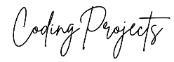
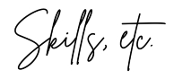

Hi, I'm Liz!
I've got a background in marketing, project management, entrepreneurship, and operations. I've been building
Wordpress websites for years, and in 2023 I completed Lighthouse Labs' Web Development Bootcamp.
This site showcases some of my work. If you're interested in working with me,
please reach out to me via email or on
Linkedin.
Thanks for visiting!
Hometown Plumbing & Heating
As mentioned above, I wrote all the content on Hometown Plumbing & Heating's website.
Orbit Apps
I wrote the majority of the content on the company website, including these highlights:
My last articles were posted in January of 2023; any subsequent articles attributed to my name were written by other authors.
S&R Denim Co.
I did part time work for several years for this premium apron business based out of Vancouver (and, full disclosure, owned by my brother).
I primarily wrote short blog posts profiling brand ambassadors, but I did enjoy putting together this article: 80+ Questions to Improve Your Brand.

Bachelor of Commerce with Distinction, University of Victoria
Web Development Certificate, Lighthouse Labs, 2023
Google Project Management Certificate, 2024
Google Analytics Certification, 2023
Google Ads Display Certification, 2024

Marketing: Blogging, copyediting, email marketing and CRMs, strategic planning, digital advertising, SEO, persona development, social media, event management, Google Analytics, Google Search Console
Web and Ecommerce: HTML, CSS, JavaScript, Wordpress, Divi, WPBakery, Etsy, Shopify
Project Management: Agile, Scrum, project phases and documentation
Operations: HRIS management, hiring, reference checks, payroll, benefits management, employee orientation, data entry, documentation management, contract review, organizational software and tools management, Google Workspace Admin
Software: Canva, Google Workspace, MS Office, Slack, Discord, Drip, Notion, Trello, Rise People, Zoom
Coding: Ruby, SQL, Postgres, Git, Jest, Cypress, Mocha & Chai, Storybook, Node.js, React, Ajax, Express, EJS, JQuery, Bootstrap, SASS, Rails, Git, VSCode